Mixed-Effects Regression Models
UQ SLC Digital Team
2019-11-20

1 Introduction
This tutorial introduces mixed-effects regression modeling using “R”. The entire code for the sections below can be downloaded here.
Mixed-effects models are rapidly increasing in use in data analysis because they allow us to incorporate hierarchical ornested data structures. Mixed-effecst models are, of course, an extension of fixed-effects regression models are also multivariate and come in different types.
In contrast to fixed-effects regression models, mixed-effects models are not simple additive models because they are based on complex matrix multiplications where predicted values represent the product of the random effects multiplied by the intercept values plus the estimates of the fixed effects component in the model.
In the following, we will go over the most relevant and frequently used types of mixed-effect regression models, mixed-effects linear regression models and mixed-effects binomial logistic regression models.
The major difference between these types of models is that they take different types of dependent variables. While linear models take numeric dependent variables, logistic models take nominal variables.
2 Preparation and session set up
As all caluculations and visualizations in this tutorial rely on “R”, it is necessary to install “R”, “RStudio”, and “Tinn-R”. If these programms (or, in the case of “R”, environments) are not already installed on your machine, please search for them in your favorite search engine and add the term “download”. Open any of the first few links and follow the installation instructions (they are easy to follow, do not require any specifications, and are pretty much self-explanatory).
In addition, certain “libraries” or “packages” need to be installed so that the scripts shown below are executed without errors. Before turning to the code below, please install the librariesby running the code below this paragraph. If you have already installed the libraries mentioned below, then you can skip ahead ignore this section. To install the necessary libraries, simply run the following code - it may take some time (between 1 and 5 minutes to install all of the libraries so you do not need to worry if it takes some time).
# clean current workspace
rm(list=ls(all=T))
# set options
options(stringsAsFactors = F) # no automatic data transformation
options("scipen" = 100, "digits" = 4) # supress math annotation
# install libraries
install.packages(c("RLRsim", "nlme", "lme4", "Hmisc", "RLRsim",
"sjPlot", "visreg", "mlogit", "plyr", "rms",
"ggplot2", "effects", "lme4", "languageR", "Hmisc"))Once you have installed “R”, “R-Studio”, “Tinn-R”, and have also initiated the session by executing the code shown above, you are good to go.
3 Linear Mixed-Effects Regression Models
The following focuses on an extension of ordinary multiple linear regressions: mixed-effects regression linear regression. Mixed-effects models have the following advantages over simpler statistical tests:
Mixed-effects models are multivariate, i.e. they test the effect of several predictors simultaneously while controlling for the effect of all other predictors.
Mixed models allow to statistically incorporate within-speaker variability and are thus fit to model hierarchical data structures.
Mixed-models provide a wealth of diagnostic statistics which enables us to control e.g. multicollinearity, i.e. correlations between predictors, and to test whether conditions or requirements are violated (e.g. homogeneity of variance, etc.).
Major disadvantages of mixed-effects regression modelling are that they are prone to producing β-errors (cf. Johnson 2009) and that they require rather large data sets.
3.1 Introduction
So far, the regression models that we have used only had fixed-effects. having only fixed-effects means that all data points are treated as if they are completely independent and thus on the same hierarchical level. However, it is very common, that the data is nested in the sense that data points are not independent because they are, for instance produced by the same speaker or are grouped by some other characteristic. In such cases, the data is considered hierarchical and statistical models should incorporate such structural features of the data they work upon. With respect to regression modelling, hierarchical structures are incorporated by what is called random effects. When models only have a fixed-effects structure, then they make use of only a single intercept and/or slope (as in the left panel in the figure below), while mixed effects models have intercepts for each level of a random effect. If the random effect structure represents speakers then this would mean that a mixed-model would have a separate intercept and or slope for each speaker.

Random Effects have two parameters: the intercept (the point where the regression line cross the y-axis) and the slope (the acclivity of the regression line). In contrast to fixed-effects models have only 1 intercept and one slope (left panel of the Figure above) while mixed-effects models can have various random intercepts (centre left panel ) or various random slopes (centre right panel ), or both, various random intercepts and various random slopes (right panel ). In the following, we will only focus on models with random intercepts because this is the by far more common method and because including both random intercepts and random slopes requires huge amounts of data. Consider the Figure below to understand what is meant by “random intercepts”.
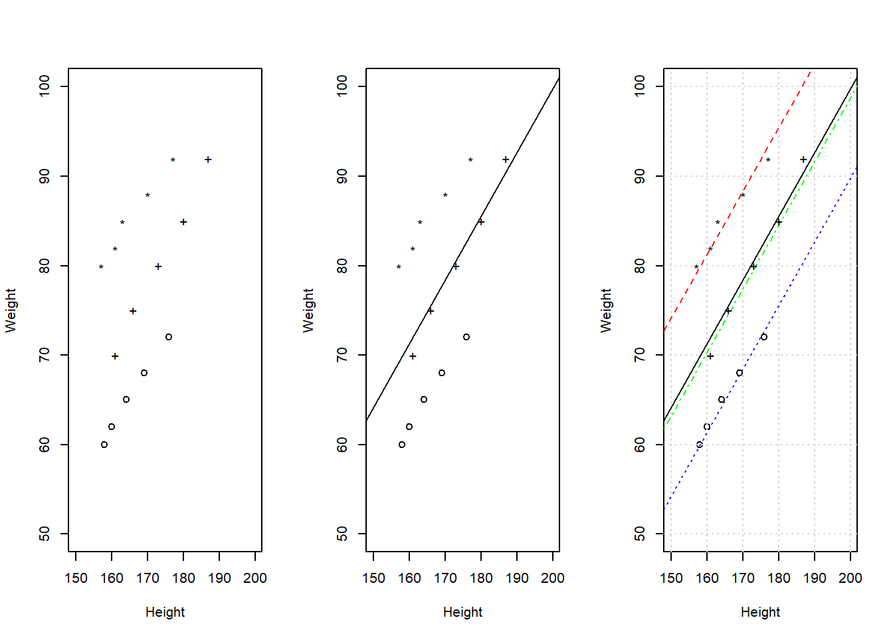
The left panel merely shows the data while the centre panel includes the regression line for a regression that estimates Weight based on Height. The right panel shows the regression line and, in addition, random intercepts each of the three groups.
After adding random intercepts, predictors (or fixed effects) are added to the model (just like with multiple regression). So mixed-effects are called mixed-effects because they contain both random and fixed effects.
In terms of general procedure, random effects are added first, and only after we have ascertained that including random effects is warranted, we test whether including fixed-effects is warranted (vgl. A. Field, Miles, and Field 2012). We test whether including random effects is warranted by comparing a model, that bases its estimates of the depended variable solely on the base intercept (the mean), with a model, that bases its estimates of the dependent variable solely on the intercepts of the random effect. If the random-effect model explains significantly more variance than the simple model without random effect structure, then we continue with the mixed-effects model. In other words, including random effects is justified if they reduce residual deviance.
3.2 Example: Preposition Use across Time by Genre
To explore how to implement a mixed-effects model in “R” we revisit the preposition data that contains relative frequencies of prepositions in English texts written between 1150 and 1913. As a first step, and to prepare our analysis, we load necessary “R” packages, specify options, and load as well as provide an overview of the data.
# activate packages
library(RLRsim)
library(nlme)
library(lme4)
library(ggplot2)
# load functions
source("https://slcladal.github.io/rscripts/multiplot_ggplot2.r")
# set options
# supress scientific notation
options("scipen" = 100, "digits" = 4)
# do not convert strings into factors
options(stringsAsFactors = F)
# read in data
mydata <- read.delim("https://slcladal.github.io/data/lmemdata.txt",
header = TRUE)
# convert date into a numeric variable
mydata$date <- as.numeric(mydata$date)
# inspect updated data set
head(mydata); nrow(mydata) ## date genre text pptw region
## 1 1736 SCIENCE_OTHER albin 166.0 north
## 2 1711 EDUC_TREATISE anon 139.9 north
## 3 1808 LETTERS_PRIV austen 130.8 north
## 4 1878 EDUC_TREATISE bain 151.3 north
## 5 1743 EDUC_TREATISE barclay 145.7 north
## 6 1908 EDUC_TREATISE benson 120.8 north## [1] 537The data set contains the date when the text was written (date), the genre of the text (genre), the name of the text (text), the relative frequency of prepositions in the text (pptw), and the region in which the text was written (region). We now plot the data to get a first impression of its structure.
# visualize variables (2 plots per row)
# 3 plots in 1 window
def.par <- par(no.readonly = TRUE)
nf <- layout(matrix(c(1, 1, 2, 3), 2, 2, byrow = T))
plot(mydata$pptw ~ mydata$date, ylab = "Frequency", xlab = "year of publication")
abline(lm(mydata$pptw ~ mydata$date), lty = 3, lwd = 2, col = "red")
# re-set margins to fit the labels
par(mar = c(7.2, 4, 1, 2) + 0.1)
# reorder genre by median
genrebymedian <- with(mydata, reorder(genre, -pptw, median))
# generate plots
plot(mydata$pptw ~ genrebymedian,
col = "lightgrey",
ylab = "Frequency",
xlab = "",
las = 2,
cex.axis = .7,
cex = .5)
# re-set margins
par(mar = c(5, 4, 1, 2) + 0.1)
x = mydata$pptw
h = hist(mydata$pptw,
ylim =c(0, 150),
xlim = c(50, 200),
xlab = "prepositions per text",
col = "lightgrey",
main = "")
xfit <- seq(min(mydata$pptw), max(mydata$pptw), length = 40)
yfit <- dnorm(xfit, mean = mean(mydata$pptw),sd = sd(mydata$pptw))
yfit <- yfit*diff(h$mids[1:2])*length(x)
lines(xfit, yfit, lty = 2, lwd=2)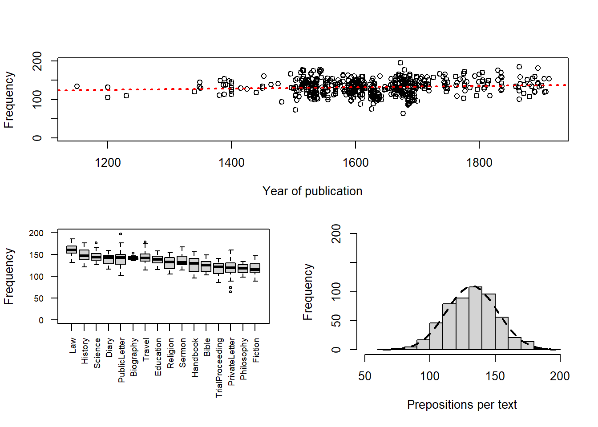
# restore original graphic's parameters
par(def.par)The scatter plot in the upper panel indicates that the use of prepositions has moderately increased over time while the boxplots in the lower left panel show that the genres differ quite substantially with respect to their median frequencies of prepositions per text. Finally, the histogram in the lower right panel show that preposition use is distributed normally with a mean of 132.2 prepositions per text.
# plot 8
p8 <- ggplot(mydata, aes(date, pptw)) +
geom_point() +
labs(x = "Year") +
labs(y = "Prepositions per 1,000 words") +
geom_smooth(method = "lm") +
theme_set(theme_bw(base_size = 10))
# plot 9
p9 <- ggplot(mydata, aes(region, pptw)) +
geom_boxplot() +
labs(x = "Region") +
labs(y = "Prepositions per 1,000 words") +
geom_smooth(method = "lm") # with linear model smoothing!
# include genre (lowess)
multiplot(p8, p9, cols = 2)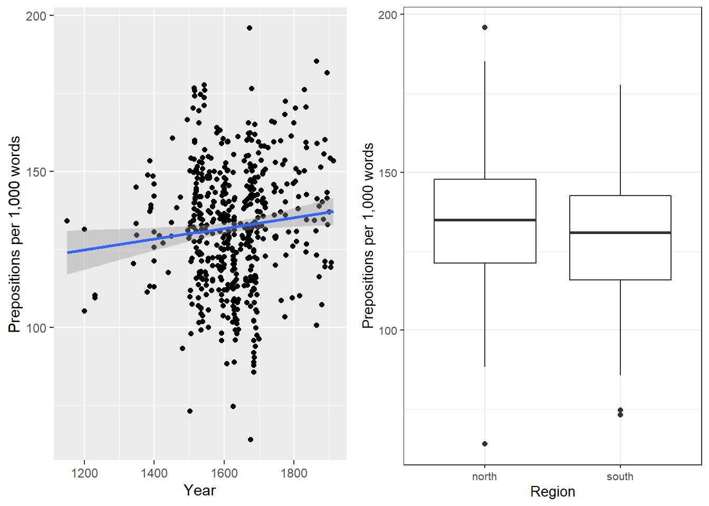
ggplot(mydata, aes(date, pptw)) +
geom_point() +
facet_wrap(~ genre, nrow = 4) +
geom_smooth(method = "lm") +
theme_bw() +
labs(x = "Year") +
labs(y = "Prepositions per 1,000 words") +
coord_cartesian(ylim = c(0, 220))
Centering or scaling numeric variables is useful for later interpretation of regression models: if the date variable was not centered, the regression would show the effects of variables at year 0(!). If numeric variables are scaled, other variables are variables are considered relative not to 0 but to the mean of that variable (in this case the mean of years in our data). Centering simply means that the mean of the numeric variable is subtracted from each value.
mydata$date <- scale(mydata$date, scale = F)
# inspect data
head(mydata); str(mydata)## date genre text pptw region
## 1 109.87 SCIENCE_OTHER albin 166.0 north
## 2 84.87 EDUC_TREATISE anon 139.9 north
## 3 181.87 LETTERS_PRIV austen 130.8 north
## 4 251.87 EDUC_TREATISE bain 151.3 north
## 5 116.87 EDUC_TREATISE barclay 145.7 north
## 6 281.87 EDUC_TREATISE benson 120.8 north## 'data.frame': 537 obs. of 5 variables:
## $ date : num [1:537, 1] 109.9 84.9 181.9 251.9 116.9 ...
## ..- attr(*, "scaled:center")= num 1626
## $ genre : chr "SCIENCE_OTHER" "EDUC_TREATISE" "LETTERS_PRIV" "EDUC_TREATISE" ...
## $ text : chr "albin" "anon" "austen" "bain" ...
## $ pptw : num 166 140 131 151 146 ...
## $ region: chr "north" "north" "north" "north" ...# generate a glm baseline model
m0.glm <- glm(pptw ~ 1, family = gaussian, data = mydata)
# generate a lm base-line model
m0.lm <- lm(pptw ~ 1, data = mydata)
# set up first lme model including only the random effect specifying the random intercepts
m0.lme = lme(pptw ~ 1, random = ~1|genre, data = mydata, method = "ML")
# set up first lmer model including only the random effect specifying the random intercepts
m0.lmer = lmer(pptw ~ 1 + (1|genre), data = mydata, REML = F)3.3 Testing Random Effects
As a first step in the modelling process, we now need to determine whether or not including a random effect structure is justified. We do so by comparing the base-line model without random intercepts to the model with random intercepts using a Likelihood Ratio Test. A short word of warning is in order here regarding the specific of the model: we need to set “REML = T” because Relative Estimate Maximum Likelihood (REML) provides better estimates for the random effects part of the model compared with the simpler Maximum Likelihood (ML) specification (cf. Field, Miles & Field 2012:879).
x2 = -2*logLik(m0.lm, REML = T)+2*logLik(m0.lmer, REML = T)
x2 <- x2 <- x2[[1]]
list(x2, pchisq(x2, df=2, lower.tail=F))## [[1]]
## [1] 220.9
##
## [[2]]
## [1] 0.000000000000000000000000000000000000000000000001082The inclusion of a random effect structure with random intercepts is justified based on the Likelihood Ratio Test.
However, we also want to test which random effects structure is the best. We therefore create several models with different random effect structures and compare these models to see which random effect structure has the highest explanatory power.
We generate a m0.lmer model but using the “lmer” function from the “lme4” package. When we compare models, the REML specification must be FALSE or set to “method =”ML" (Maximum Likelihood) (depending on the function) when we use ANOVAs to compare models (cf. Field, Miles & Field 2012:). This is because “ML” produces more accurate estimates of fixed regression parameters, whereas “REML” produces more accurate estimates of random variances (Twisk 2006). […] Also, if you want to compare models you must use ML" (Field, Miles & Field 2012:879).
m0.lmer1 <- lmer(pptw ~ (1|genre) + 1, data = mydata, REML = T)
m0.lmer2 <- lmer(pptw ~ (1|region) + 1, data = mydata, REML = T)
m0.lmer3 <- lmer(pptw ~ (1|genre/region) + 1, data = mydata, REML = T)
anova(m0.lmer1, m0.lmer2, m0.lmer3)## Data: mydata
## Models:
## m0.lmer1: pptw ~ (1 | genre) + 1
## m0.lmer2: pptw ~ (1 | region) + 1
## m0.lmer3: pptw ~ (1 | genre/region) + 1
## Df AIC BIC logLik deviance Chisq Chi Df Pr(>Chisq)
## m0.lmer1 3 4502 4515 -2248 4496
## m0.lmer2 3 4719 4731 -2356 4713 0 0 1
## m0.lmer3 4 4501 4518 -2246 4493 220 1 <0.0000000000000002 ***
## ---
## Signif. codes: 0 '***' 0.001 '**' 0.01 '*' 0.05 '.' 0.1 ' ' 1# the model with the random effect structure (1|genre/region) performs
# significantly better (also it has a much lower AIC and deviance)
# therefore, m0.lmer3 is our new m0 model
m0.lmer <- m0.lmer3
# test if including the random effect is permitted by applying a restricted likelihood ratio test
# WARNING: this test can only take simple random effect (1|genre) but not
# (1|genre/date)
exactRLRT(m0.lmer1)##
## simulated finite sample distribution of RLRT.
##
## (p-value based on 10000 simulated values)
##
## data:
## RLRT = 220, p-value <0.0000000000000002# there is another way to compare model with and without random effects: see below!
# create a second model with date as a fixed effect
# m1.lme <- lme(m0.lme, .~. + date) # alternative way to update the model
m1.lme = lme(pptw ~ date, random = ~1|genre/region, data = mydata, method = "ML")
# set up m1 model but using the lmer function from the lme4 package
m1.lmer = lmer(pptw ~ (1|genre/region) + date, data = mydata, REML = F)
# compare the models to see if including date has improved the model
# the difference between the models is the effect (size) of date!
anova(m0.lme, m1.lme)## Model df AIC BIC logLik Test L.Ratio p-value
## m0.lme 1 3 4502 4515 -2248
## m1.lme 2 5 4496 4517 -2243 1 vs 2 10.12 0.0063# m1.lme is the better model (sig. p-value & lower AIC)
# date correlates significantly with pptw (X2(1) = 8.81, p = .003);
# X2 = L.Ratio;
# df = subtract df smaller from df larger model
# inspect results
summary(m1.lme)## Linear mixed-effects model fit by maximum likelihood
## Data: mydata
## AIC BIC logLik
## 4496 4517 -2243
##
## Random effects:
## Formula: ~1 | genre
## (Intercept)
## StdDev: 12.05
##
## Formula: ~1 | region %in% genre
## (Intercept) Residual
## StdDev: 3.453 14.97
##
## Fixed effects: pptw ~ date
## Value Std.Error DF t-value p-value
## (Intercept) 133.95 3.183 505 42.09 0.0000
## date 0.02 0.007 505 2.70 0.0071
## Correlation:
## (Intr)
## date 0.003
##
## Standardized Within-Group Residuals:
## Min Q1 Med Q3 Max
## -3.74687 -0.66308 0.01827 0.64043 3.62269
##
## Number of Observations: 537
## Number of Groups:
## genre region %in% genre
## 16 31# alternative display of the results
anova(m1.lme)## numDF denDF F-value p-value
## (Intercept) 1 505 1770.7 <.0001
## date 1 505 7.3 0.0071# test if date is significant
anova(m0.lmer, m1.lmer)## Data: mydata
## Models:
## m0.lmer: pptw ~ (1 | genre/region) + 1
## m1.lmer: pptw ~ (1 | genre/region) + date
## Df AIC BIC logLik deviance Chisq Chi Df Pr(>Chisq)
## m0.lmer 4 4501 4518 -2246 4493
## m1.lmer 5 4496 4517 -2243 4486 7.03 1 0.008 **
## ---
## Signif. codes: 0 '***' 0.001 '**' 0.01 '*' 0.05 '.' 0.1 ' ' 1# extract estimates and sd for fixed and random effects
intervals(m1.lme)## Approximate 95% confidence intervals
##
## Fixed effects:
## lower est. upper
## (Intercept) 127.713505 133.95499 140.19647
## date 0.004896 0.01787 0.03083
## attr(,"label")
## [1] "Fixed effects:"
##
## Random Effects:
## Level: genre
## lower est. upper
## sd((Intercept)) 8.19 12.05 17.73
## Level: region
## lower est. upper
## sd((Intercept)) 1.172 3.453 10.17
##
## Within-group standard error:
## lower est. upper
## 14.07 14.97 15.933.4 Model Diagnostics
We can now evaluate the goodness of fit of the model and check if mathematical requirements and assumptions have been violated. In a first step, we generate diagnostic plots that focus on the random effect structure.
plot(m1.lme, genre ~ resid(.), abline = 0 ) # generate diagnostic plots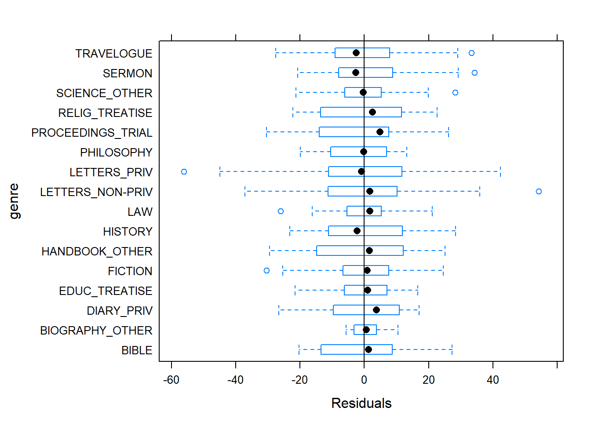
The plot shows that there are some outliers (points outside the boxes) and that the variability within letters is greater than in other genres we therefore examine the genres in isolation standardized residuals versus fitted values (Pinheiro & Bates 2000:175).
plot(m1.lme, resid(., type = "p") ~ fitted(.) | genre, id = 0.05, adj = -0.3)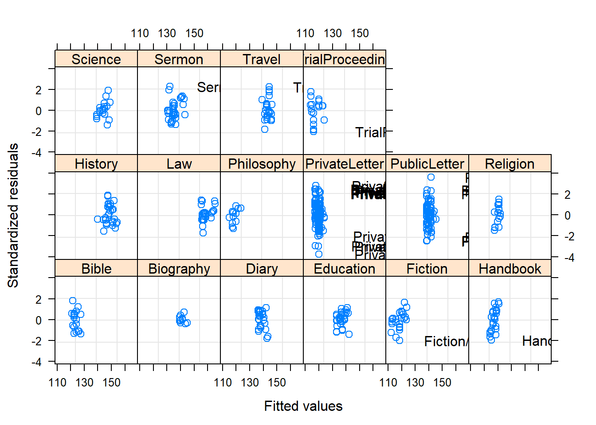
The plot showing the standardized residuals versus fitted values confirms that there are outliers in the letters because there are obviously differences in the variance, we create a new model which uses weights to compensate heterogeneity of variance (cf. Pinheiro & Bates 2000:177).
m2.lme <- update(m1.lme, weights = varIdent(form = ~ 1 | genre))
# test if m2.lme is more appropriate for the data than m1.lme
anova(m1.lme, m2.lme)## Model df AIC BIC logLik Test L.Ratio p-value
## m1.lme 1 5 4496 4517 -2243
## m2.lme 2 20 4483 4569 -2222 1 vs 2 42.75 0.0002The heteroscedastic model (i.e. m2.lme which uses weights to account for unequal variance) is performing significantly better than the homoscedasticity model m1.lme. We therefore inspect the results of the new heteroscedastic model.
summary(m2.lme) # inspect results## Linear mixed-effects model fit by maximum likelihood
## Data: mydata
## AIC BIC logLik
## 4483 4569 -2222
##
## Random effects:
## Formula: ~1 | genre
## (Intercept)
## StdDev: 12.14
##
## Formula: ~1 | region %in% genre
## (Intercept) Residual
## StdDev: 4.183 13.89
##
## Variance function:
## Structure: Different standard deviations per stratum
## Formula: ~1 | genre
## Parameter estimates:
## BIBLE BIOGRAPHY_OTHER DIARY_PRIV EDUC_TREATISE
## 1.0000 0.3582 0.8994 0.7324
## FICTION HANDBOOK_OTHER HISTORY LAW
## 0.8895 1.1417 1.0185 0.7591
## LETTERS_NON-PRIV LETTERS_PRIV PHILOSOPHY PROCEEDINGS_TRIAL
## 1.2641 1.2302 0.7753 1.2262
## RELIG_TREATISE SCIENCE_OTHER SERMON TRAVELOGUE
## 1.0108 0.8293 0.9821 1.0663
## Fixed effects: pptw ~ date
## Value Std.Error DF t-value p-value
## (Intercept) 134.01 3.209 505 41.76 0.0000
## date 0.02 0.006 505 3.36 0.0008
## Correlation:
## (Intr)
## date 0.002
##
## Standardized Within-Group Residuals:
## Min Q1 Med Q3 Max
## -3.29018 -0.67307 0.03261 0.64633 3.08450
##
## Number of Observations: 537
## Number of Groups:
## genre region %in% genre
## 16 31anova(m2.lme) # ANOVA display of the results## numDF denDF F-value p-value
## (Intercept) 1 505 1743.6 <.0001
## date 1 505 11.3 0.0008anova(m0.lme, m2.lme) # test if date is significant## Model df AIC BIC logLik Test L.Ratio p-value
## m0.lme 1 3 4502 4515 -2248
## m2.lme 2 20 4483 4569 -2222 1 vs 2 52.87 <.0001intervals(m2.lme) # extract estimates and sd for fixed and random effects## Approximate 95% confidence intervals
##
## Fixed effects:
## lower est. upper
## (Intercept) 127.719320 134.01179 140.30426
## date 0.008414 0.02022 0.03203
## attr(,"label")
## [1] "Fixed effects:"
##
## Random Effects:
## Level: genre
## lower est. upper
## sd((Intercept)) 8.253 12.14 17.87
## Level: region
## lower est. upper
## sd((Intercept)) 2.092 4.183 8.363
##
## Variance function:
## lower est. upper
## BIOGRAPHY_OTHER 0.2233 0.3582 0.5747
## DIARY_PRIV 0.6532 0.8994 1.2385
## EDUC_TREATISE 0.5210 0.7324 1.0295
## FICTION 0.6426 0.8895 1.2312
## HANDBOOK_OTHER 0.8170 1.1417 1.5955
## HISTORY 0.7583 1.0185 1.3682
## LAW 0.5499 0.7591 1.0480
## LETTERS_NON-PRIV 0.9974 1.2641 1.6020
## LETTERS_PRIV 0.9907 1.2302 1.5276
## PHILOSOPHY 0.4907 0.7753 1.2250
## PROCEEDINGS_TRIAL 0.8344 1.2262 1.8019
## RELIG_TREATISE 0.6776 1.0108 1.5078
## SCIENCE_OTHER 0.5702 0.8293 1.2063
## SERMON 0.7351 0.9821 1.3121
## TRAVELOGUE 0.7574 1.0663 1.5012
## attr(,"label")
## [1] "Variance function:"
##
## Within-group standard error:
## lower est. upper
## 11.62 13.89 16.613.5 Effect Sizes
We will now extract effect sizes (in the example: the effect size of date) and calculate normalized effect size measures (this effect size measure works for all fixed effects). To calculate the effect size, take the square root of the squared t-value divided by the t-value squared plus the degrees of freedom:
r = sqrt(t^2^/(t^2^+df)).
A brief word of warning is in order here: only apply this function to main effects not involved in interactions as they are meaningless because the amount of variance explained by main effects involved in interactions is unclear (cf. Field, Miles & Field 2012:641).
ef.lme <- function(x) {
df <- summary(x)[[20]][6]
t <- summary(x)[[20]][8]
#df <- summary(x)$tTable[, 3]
#t <- summary(x)$tTable[, 4]
r <- sqrt((t^2)/((t^2)+df))
return(paste("Pearson's r = ", round(r, 3)))
}
ef.lme(m2.lme)## [1] "Pearson's r = 0.148"We now generate another m1 model but we use the “lmer” function from the “lme4” package rather than the “glmer” function.
m2.lmer = lmer(pptw ~ (1|genre/region) + date, data = mydata, REML = F)
summary(m2.lmer)## Linear mixed model fit by maximum likelihood ['lmerMod']
## Formula: pptw ~ (1 | genre/region) + date
## Data: mydata
##
## AIC BIC logLik deviance df.resid
## 4496 4517 -2243 4486 532
##
## Scaled residuals:
## Min 1Q Median 3Q Max
## -3.747 -0.663 0.018 0.640 3.623
##
## Random effects:
## Groups Name Variance Std.Dev.
## region:genre (Intercept) 11.9 3.45
## genre (Intercept) 145.2 12.05
## Residual 224.1 14.97
## Number of obs: 537, groups: region:genre, 31; genre, 16
##
## Fixed effects:
## Estimate Std. Error t value
## (Intercept) 133.9550 3.1768 42.17
## date 0.0179 0.0066 2.71
##
## Correlation of Fixed Effects:
## (Intr)
## date 0.003We now calculate the variance explained when only a simple random effect is involved. This is done by dividing the variance of the random effect (145.2) by variance of random effect plus residual variance (145.2+224.1) times 100. The results represents the percentage of variance explained by the random effect: (145.2/(145.2+2284.1))*100.
Create lmer with complex random effect structure
An alternative for testing if including the random intercepts is permitted.
WARNING: this method is not as good as applying a restricted likelihood ratio test(!) because the p-value is only an approximation IMPORTANT: the second model is a glm object
m2.lmer = lmer(pptw ~ (1|genre/region) + date, data = mydata, REML = F)
2*pchisq(2*as.numeric(logLik(m2.lmer)-logLik(m0.glm)), 2, lower.tail = FALSE)## [1] 0.000000000000000000000000000000000000000000000000051593.6 Rerun Model Diagnostics
Diagnostic plot (Pinheiro & Bates 2000:11, 182) what we wish to see: a cloud of dots in the middle of the window without structure what we do not want to see: a funnel-shaped cloud because this indicates an increase of the errors/residuals with an increase of the predictor(s) (because this would indicate heteroscedasticity) in short: observed values against fitted values (cf. Pinheiro & Bates 2000:182)
# start plotting
par(mfrow = c(2, 2)) # display plots in 2 rows and 2 columns
plot(m2.lme)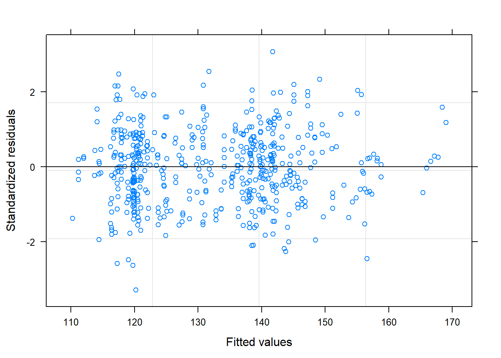
par(mfrow = c(1, 1))# diagnostic plot (Pinheiro & Bates 2000:21)
plot(m2.lme, form = resid(., type = "p") ~ fitted(.) | genre, abline = 0, cex = .5)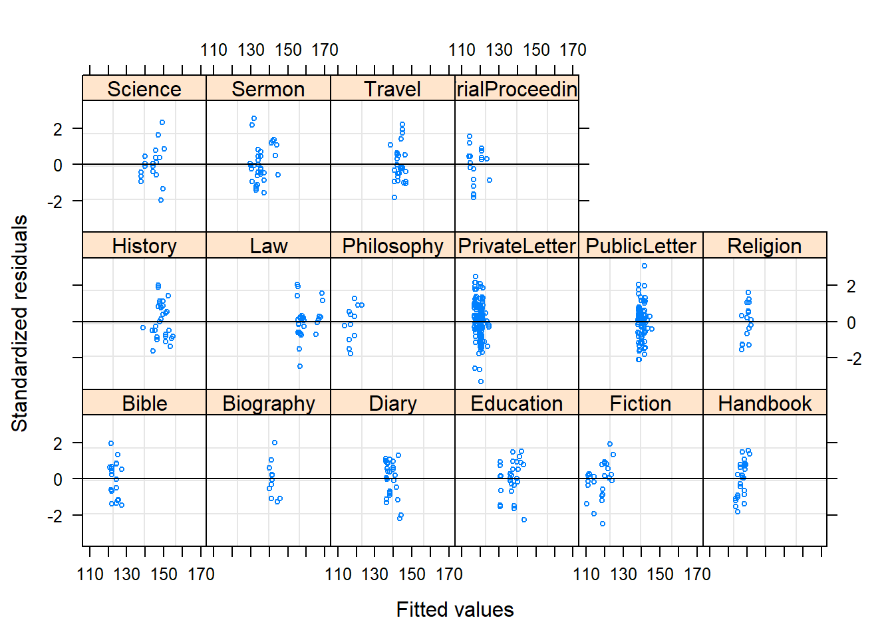
# diagnostic plot: residuals of fitted values against observed values (cf. Pinheiro & Bates 2000:182)
qqnorm(m2.lme)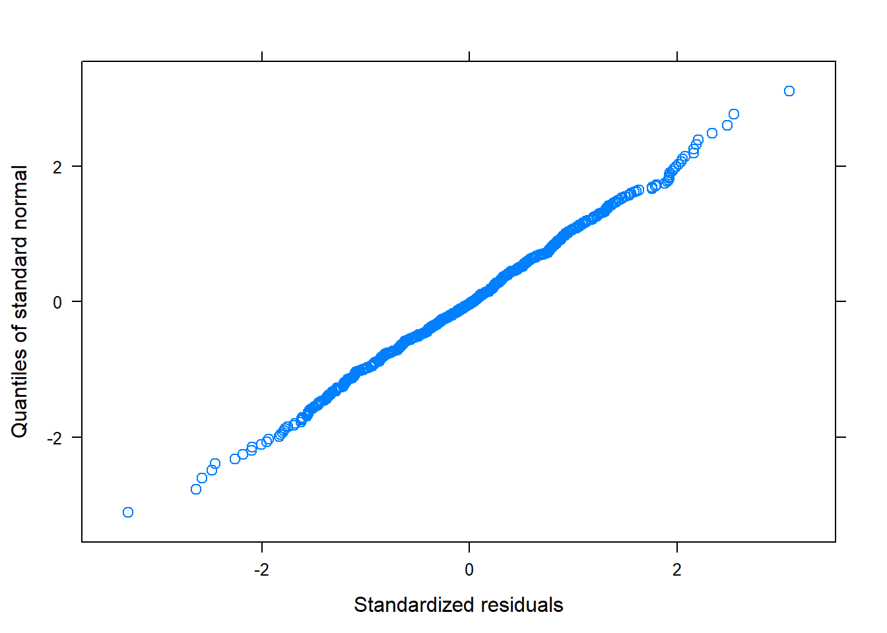
# normal plot of the estimated date %in% genre random effects
qqnorm(m2.lme, ~ranef(., level = 2), id = 0.05, cex = 0.7, xlim = c(-40, 40))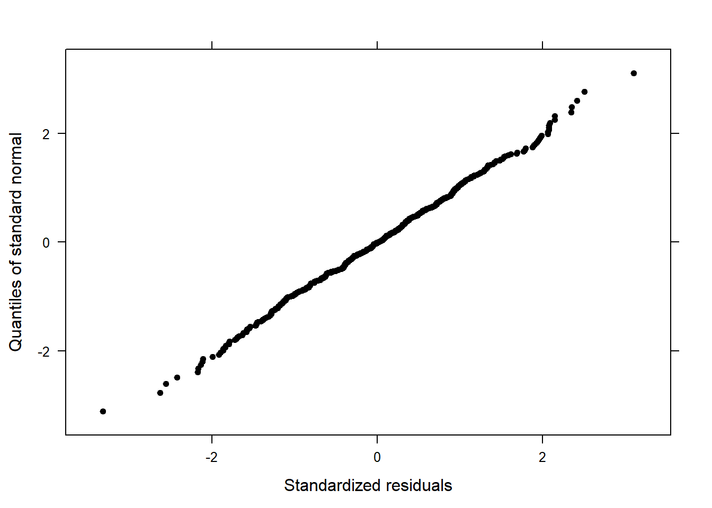
# diagnostic plot: normal plots of the residuals by genre (cf. Pinheiro & Bates 2000:22, 179)
qqnorm(m2.lme, ~resid(.) | genre )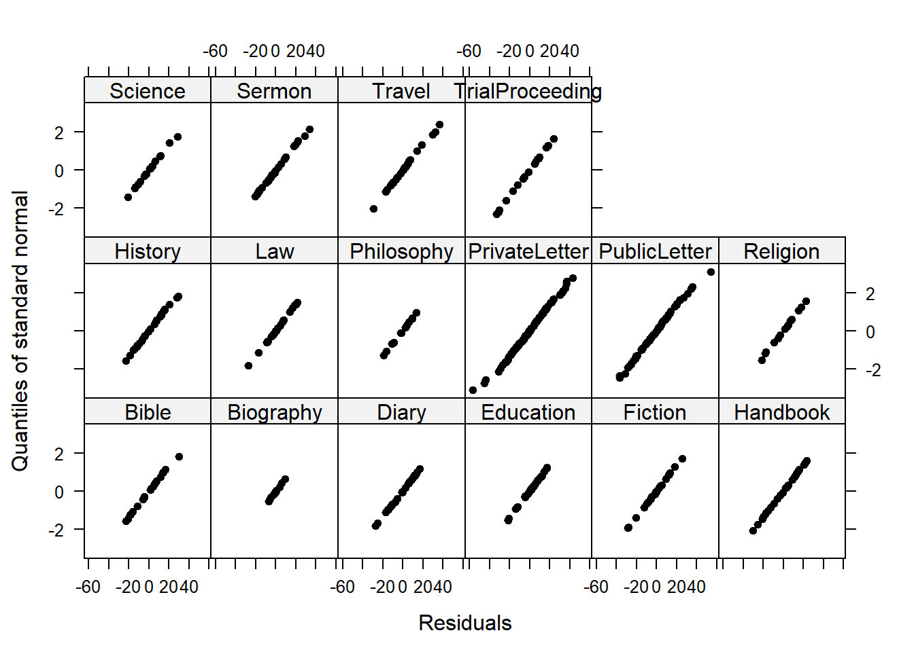
# inspect the observed responses versus the within-group fitted values
# (cf. Pinheiro & Bates 2000:178)
plot(m2.lme, pptw ~ fitted(.), id = 0.05, adj = -0.3, xlim = c(80, 220), cex = .8)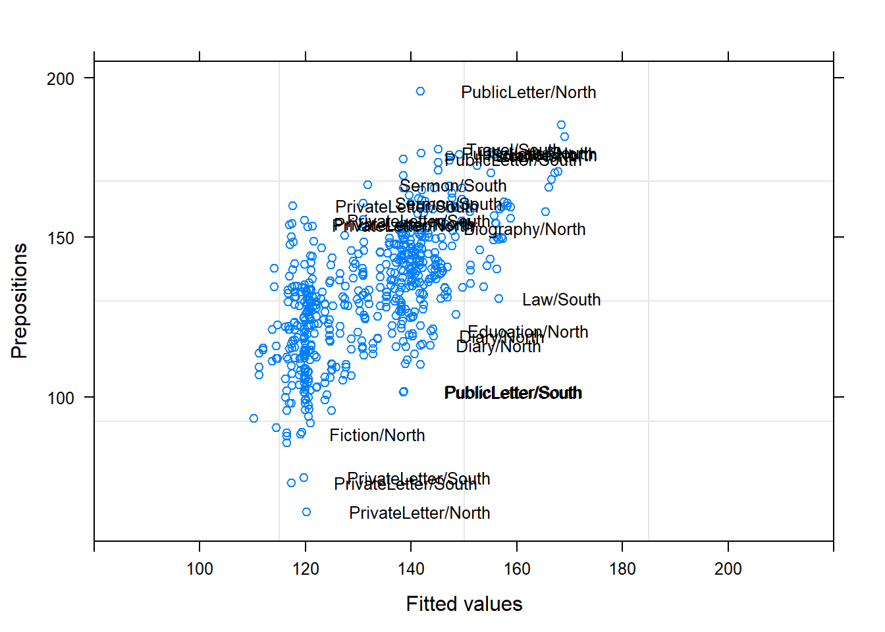
3.7 Reporting Results
summary(m2.lmer)## Linear mixed model fit by maximum likelihood ['lmerMod']
## Formula: pptw ~ (1 | genre/region) + date
## Data: mydata
##
## AIC BIC logLik deviance df.resid
## 4496 4517 -2243 4486 532
##
## Scaled residuals:
## Min 1Q Median 3Q Max
## -3.747 -0.663 0.018 0.640 3.623
##
## Random effects:
## Groups Name Variance Std.Dev.
## region:genre (Intercept) 11.9 3.45
## genre (Intercept) 145.2 12.05
## Residual 224.1 14.97
## Number of obs: 537, groups: region:genre, 31; genre, 16
##
## Fixed effects:
## Estimate Std. Error t value
## (Intercept) 133.9550 3.1768 42.17
## date 0.0179 0.0066 2.71
##
## Correlation of Fixed Effects:
## (Intr)
## date 0.0034 Mixed-Effects Binomial Logistic Regression Models
We now turn to an extension of binomial logistic regression: mixed-effects binomial logistic regression. As is the case with linear mixed-effects models logistic mixed effects models have the following advantages over simpler statistical tests:
Mixed-effects models are multivariate, i.e. they test the effect of several predictors simultaneously while controlling for the effect of all other predictors.
Mixed models allow to statistically incorporate within-speaker variability and are thus fit to model hierarchical data structures.
Mixed-models provide a wealth of diagnostic statistics which enables us to control e.g. multicollinearity, i.e. correlations between predictors, and to test whether conditions or requirements are violated (e.g. homogeneity of variance, etc.).
Major disadvantages of regression modelling are that they are prone to producing β-errors (cf. Johnson 2009) and that they require rather large data sets.
4.1 Introduction
As is the case with linear mixed-effects models, binomial logistic mixed-effect models are multivariate analysis that treat data points as hierarchical or grouped in some way. In other words, they take into account that the data is nested in the sense that data points are produced by the same speaker or are grouped by some other characteristics. In mixed-models, hierarchical structures are modelled as random effects. If the random effect structure represents speakers then this means that a mixed-model would have a separate intercept and/or slope for each speaker.
Random Effects in linear models two parameters: the intercept (the point where the regression line crosses the y-axis) and the slope (the acclivity of the regression line). In contrast to linear mixed-effects models, random effects differ in the position and the slope of the logistic function that is applied to the likelihood of the dependent variable. random intercepts (centre left panel ) or various random slopes (centre right panel ), or both, various random intercepts and various random slopes (right panel ). In the following, we will only focus on models with random intercepts because this is the by far more common method and because including both random intercepts and random slopes requires huge amounts of data. Consider the Figure below to understand what is meant by “random intercepts”.

The upper left panel merely shows the logistic curve representing the predictions of a fixed-effects logistic regression with a single intercept and slope. The upper right panel shows the logistic curves representing the predictions of a of a mixed-effects logistic regression with random intercepts for each level of a grouping variable. The lower left panel shows the logistic curves representing the predictions of a mixed-effects logistic regression with one intercept but random slopes for each level of a grouping variable. The lower right panel shows the logistic curves representing the predictions of a mixed-effects logistic regression with random intercepts and random slopes for each level of a grouping variable.
After adding random intercepts, predictors (or fixed effects) are added to the model (just like with multiple regression). So mixed-effects are called mixed-effects because they contain both random and fixed effects.
In terms of general procedure, random effects are added first, and only after we have ascertained that including random effects is warranted, we test whether including fixed-effects is warranted (vgl. A. Field, Miles, and Field 2012). We test whether including random effects is warranted by comparing a model, that bases its estimates of the dependent variable solely on the base intercept, with a model, that bases its estimates of the dependent variable solely on the intercepts of the random effect. If the random-effect model explains significantly more variance than the simple model without random effect structure, then we continue with the mixed-effects model. In other words, including random effects is justified if they reduce residual deviance.
4.2 Example: Discourse LIKE in Irish English
In this example we will investigate which factors correlate with the use of final discourse like (e.g. “The weather is shite, like!”) in Irish English. The data set represents speech units in a corpus that were coded for the speaker who uttered a given speech unit, the gender (Gender: Men versus Women) and age of that speaker (Age: Old versus Young), whether the interlocutors were of the same or a different gender (ConversationType: SameGender versus MixedGender), and whether another final discourse like had been used up to three speech units before (Priming: NoPrime versus Prime), whether or not the speech unit contained an final discourse like (SUFLike: 1 = yes, 0 = no. To begin with, we clean the current work space, set option, install and activate relevant packages, load customized functions, and load the example data set.
rm(list=ls(all=T)) # clean current workspace
options("scipen" = 100, "digits" = 4) # set options
library(Hmisc) # activate library
library(RLRsim) # activate library
library(sjPlot) # activate library
library(visreg) # activate library
library(mlogit) # activate library
library(plyr) # activate library
library(rms) # activate library
library(ggplot2) # activate library
library(effects) # activate library
library(lme4) # activate library
library(languageR) # activate library
source("rscripts/multiplot_ggplot2.R") # load multiplot function
source("rscripts/PseudoR2lmerBinomial.R") # load pseudor2 function
source("rscripts/meblr.summary.R") # load summary functionNext, we load the data and inspect the structure of the data set,
# load data
mblrdata <- read.table("https://slcladal.github.io/data/mblrdata.txt",
comment.char = "",# data does not contain comments
quote = "", # data does not contain quotes
sep = "\t", # data is tab separated
header = T) # data has column names
# inspect data structure
str(mblrdata) ## 'data.frame': 10170 obs. of 6 variables:
## $ ID : chr "S1A-001$A" "S1A-001$A" "S1A-001$A" "S1A-001$A" ...
## $ Gender : chr "Men" "Men" "Men" "Men" ...
## $ Age : chr "Old" "Old" "Old" "Old" ...
## $ ConversationType: chr "SameGender" "SameGender" "SameGender" "SameGender" ...
## $ Priming : chr "Prime" "NoPrime" "NoPrime" "NoPrime" ...
## $ SUFlike : int 1 0 0 0 0 0 0 0 0 0 ...As all variables except for the dependent variable (SUFlike) are character strings, we factorize the independent variables.
# def. variables to be factorized
vrs <- c("ID", "Age", "Gender", "ConversationType", "Priming")
# def. vector with variables
fctr <- which(colnames(mblrdata) %in% vrs)
# factorize variables
mblrdata[,fctr] <- lapply(mblrdata[,fctr], factor)
# relevel Age (Young = Reference)
mblrdata$Age <- relevel(mblrdata$Age, "Young") Before continuing, we check if speakers need to be collapsed because they nest too few data points. As a general rule of thumb, random effects should have a minimum of 20 data points per level.
plot(table(mblrdata$ID)[order(table(mblrdata$ID), decreasing = T)],
ylim = c(0,150),
cex = .5)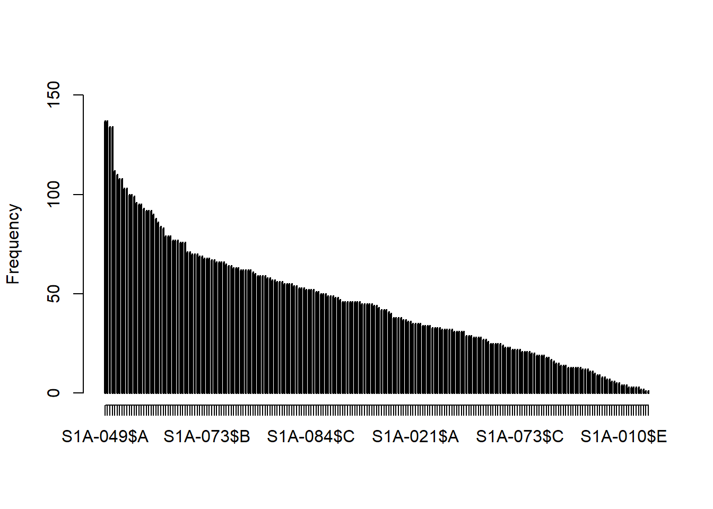
The plot indicates that the vast majority of speakers represent more than 20 cases. However, we will collapse speakers that represent fewer data points.
collapsespeaker <- table(mblrdata$ID)[which(table(mblrdata$ID) < 21)]
mblrdata$ID <- ifelse(mblrdata$ID %in% collapsespeaker, "Other", mblrdata$ID)After preparing the data, we have a look at the first six lines of the data set.
library(knitr) # load library
kable(head(mblrdata), caption = "First six rows of the data set.")| ID | Gender | Age | ConversationType | Priming | SUFlike |
|---|---|---|---|---|---|
| 1 | Men | Old | SameGender | Prime | 1 |
| 1 | Men | Old | SameGender | NoPrime | 0 |
| 1 | Men | Old | SameGender | NoPrime | 0 |
| 1 | Men | Old | SameGender | NoPrime | 0 |
| 1 | Men | Old | SameGender | NoPrime | 0 |
| 1 | Men | Old | SameGender | NoPrime | 0 |
We now plot the data to inspect the relationships within the data set.
p1 <- ggplot(mblrdata, aes(Gender, SUFlike, color = Gender)) +
scale_fill_brewer() +
stat_summary(fun.y = mean, geom = "point") +
stat_summary(fun.y = mean, geom = "line") +
stat_summary(fun.data = mean_cl_boot, geom = "errorbar", width = 0.2) +
theme_set(theme_bw(base_size = 10)) +
coord_cartesian(ylim = c(0, 1)) +
labs(x = "Sex", y = "Mean frequency of discourse like") +
guides(fill=FALSE, color=FALSE) + # supress legend
scale_color_manual(values = c("blue", "red"))
p2 <- ggplot(mblrdata, aes(Age, SUFlike, color = Age)) +
stat_summary(fun.y = mean, geom = "point") +
stat_summary(fun.y = mean, geom = "line") +
stat_summary(fun.data = mean_cl_boot, geom = "errorbar", width = 0.2) +
coord_cartesian(ylim = c(0, 1)) +
theme_set(theme_bw(base_size = 10)) +
labs(x = "Age", y = "Mean frequency of discourse like") +
guides(fill=FALSE, color=FALSE) + # supress legend
scale_color_manual(values = c("darkblue", "lightblue"))
p3 <- ggplot(mblrdata, aes(ConversationType, SUFlike, colour = ConversationType)) +
stat_summary(fun.y = mean, geom = "point") +
stat_summary(fun.y = mean, geom = "line") +
stat_summary(fun.data = mean_cl_boot, geom = "errorbar", width = 0.2) +
coord_cartesian(ylim = c(0, 1)) +
theme_set(theme_bw(base_size = 10)) +
labs(x = "ConversationType", y = "Mean frequency of discourse like", colour = "ConversationType") +
guides(fill=FALSE, color=FALSE) + # supress legend
scale_color_manual(values = c("darkgreen", "lightgreen"))
p4 <- ggplot(mblrdata, aes(Priming, SUFlike, colour = Priming)) +
stat_summary(fun.y = mean, geom = "point") +
stat_summary(fun.y = mean, geom = "line") +
stat_summary(fun.data = mean_cl_boot, geom = "errorbar", width = 0.2) +
coord_cartesian(ylim = c(0, 1)) +
theme_set(theme_bw(base_size = 10)) +
labs(x = "Priming", y = "Mean frequency of discourse like", colour = "Priming") +
guides(fill=FALSE, color=FALSE) + # supress legend
scale_color_manual(values = c("grey30", "grey60"))
p5 <- ggplot(mblrdata, aes(Age, SUFlike, colour = Gender)) +
stat_summary(fun.y = mean, geom = "point") +
stat_summary(fun.y = mean, geom = "point", aes(group= Gender)) +
stat_summary(fun.data = mean_cl_boot, geom = "errorbar", width = 0.2) +
coord_cartesian(ylim = c(0, 1)) +
theme_set(theme_bw(base_size = 10)) +
scale_color_manual(values = c("blue", "red")) +
labs(x = "Age", y = "Mean frequency of discourse like", colour = "Gender")
p6 <- ggplot(mblrdata, aes(Gender, SUFlike, colour = ConversationType)) +
stat_summary(fun.y = mean, geom = "point") +
stat_summary(fun.y = mean, geom = "point", aes(group= ConversationType)) +
stat_summary(fun.data = mean_cl_boot, geom = "errorbar", width = 0.2) +
coord_cartesian(ylim = c(0, 1)) +
theme_set(theme_bw(base_size = 10)) +
labs(x = "Sex", y = "Mean frequency of discourse like", colour = "Age") +
scale_color_manual(values = c("darkgreen", "lightgreen"))
# display the plots
multiplot(p1, p3, p5, p2, p4, p6, cols = 2)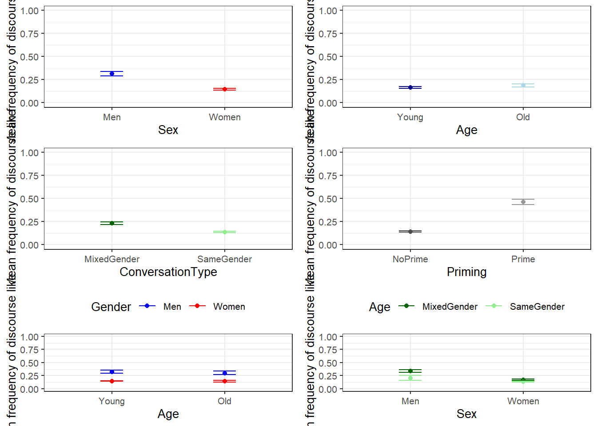
The upper left panel in the Figure above indicates that men sue discourse like more frequently than women. The centre right panel suggests that priming significantly increases the likelihood of discourse like being used. The centre left panel suggests that speakers use discourse like more frequently in mixed-gender conversations. However, the lower right panel indicates an interaction between gender and conversation type as women appear to use discourse like less frequently in same gender conversations while the conversation type does not seem to have an effect on men. After visualizing the data, we will now turn to the model building process.
4.3 Model Building
In a first step, we set the options and generate a distance matrix of the data.
# set options
options(contrasts =c("contr.treatment", "contr.poly"))
mblrdata.dist <- datadist(mblrdata)
options(datadist = "mblrdata.dist")In a next step, we generate fixed-effects minimal base-line models and a base-line mixed-model using the “glmer” function with a random intercept for ID (a lmer object of the final minimal adequate model will be created later).
# baseline model glm
m0.glm = glm(SUFlike ~ 1, family = binomial, data = mblrdata)
# baseline model lrm
m0.lrm = lrm(SUFlike ~ 1, data = mblrdata, x = T, y = T)
# base-line mixed-model
m0.glmer = glmer(SUFlike ~ (1|ID), data = mblrdata, family = binomial) 4.4 Testing the Random Effect
Now, we check if including the random effect is permitted by comparing the AICs from the glm to AIC from the glmer model. If the AIC of the glmer object is smaller than the AIC of the glm object, then this indicates that including random intercepts is justified.
aic.glmer <- AIC(logLik(m0.glmer))
aic.glm <- AIC(logLik(m0.glm))
aic.glmer; aic.glm## [1] 9193## [1] 9310The AIC of the glmer object is smaller which shows that including the random intercepts is justified. To confirm whether the AIC reduction is sufficient for justifying the inclusion of a random-effect structure, we also test whether the mixed-effects minimal base-line model explains significantly more variance by applying a Model Likelihood Ratio Test to the fixed- and the mixed effects minimal base-line models.
# test random effects
null.id = -2 * logLik(m0.glm) + 2 * logLik(m0.glmer)
pchisq(as.numeric(null.id), df=1, lower.tail=F) ## [1] 0.000000000000000000000000001273# sig m0.glmer better than m0.glmThe p-value of the Model Likelihood Ratio Test is lower than .05 which shows that the inclusion of the random-effects structure is warranted. We can now continue with the model fitting process.
4.5 Model Fitting
The next step is to fit the model which means that we aim to find the “best” model, i.e. the minimal adequate model. In this case, we will use a manual step-wise step-up, forward elimination procedure. Before we begin with the model fitting process we need to add ´control = glmerControl(optimizer = “bobyqa”)´ to avoid unneccesary failures to converge.
m0.glmer <- glmer(SUFlike ~ 1+ (1|ID), family = binomial, data = mblrdata, control=glmerControl(optimizer="bobyqa"))During each step of the fitting procedure, we test whether certain assumptions on which the model relies are violated. To avoid incomplete information (a combination of variables does not occur in the data), we tabulate the variables we intend to include and make sure that all possible combinations are present in the data. Including variables although not all combinations are present in the data would lead to unreliable models that report (vastly) inaccurate results. A special case of incomplete information is complete separation which occurs if one predictor perfectly explains an outcome (in that case the incomplete information would be caused by a level of the dependent variable). In addition, we make sure that the VIFs do not exceed a maximum of 3 as higher values would indicate multicollinearity and thus that the model is unstable. Only once we have confirmed that the incomplete information, complete separation, and multicollinearity are not a major concern, we generate the more saturated model and test whether the inclusion of a predictor leads to a significant reduction in residual deviance. If the predictor explains a significant amount of variance, it is retained in the model while being disregarded in case it does not explain a sufficient quantity of variance.
# add Priming
ifelse(min(ftable(mblrdata$Priming, mblrdata$SUFlike)) == 0, "incomplete information", "okay")## [1] "okay"m1.glm <- update(m0.glm, .~.+Priming)
m1.glmer <- update(m0.glmer, .~.+Priming)
anova(m1.glmer, m0.glmer, test = "Chi") # SIG (p<.001***) ## Data: mblrdata
## Models:
## m0.glmer: SUFlike ~ 1 + (1 | ID)
## m1.glmer: SUFlike ~ (1 | ID) + Priming
## Df AIC BIC logLik deviance Chisq Chi Df Pr(>Chisq)
## m0.glmer 2 9193 9208 -4595 9189
## m1.glmer 3 8688 8710 -4341 8682 507 1 <0.0000000000000002 ***
## ---
## Signif. codes: 0 '***' 0.001 '**' 0.01 '*' 0.05 '.' 0.1 ' ' 1# add Age
ifelse(min(ftable(mblrdata$Age, mblrdata$SUFlike)) == 0, "incomplete information", "okay")## [1] "okay"m2.glm <- update(m1.glm, .~.+Age)
ifelse(max(vif(m2.glm)) <= 3, "VIFs okay", "VIFs unacceptable") # VIFs ok## [1] "VIFs okay"m2.glmer <- update(m1.glmer, .~.+Age)
anova(m2.glmer, m1.glmer, test = "Chi") #mar sig (p=.0.61) BUT BIC inflation ## Data: mblrdata
## Models:
## m1.glmer: SUFlike ~ (1 | ID) + Priming
## m2.glmer: SUFlike ~ (1 | ID) + Priming + Age
## Df AIC BIC logLik deviance Chisq Chi Df Pr(>Chisq)
## m1.glmer 3 8688 8710 -4341 8682
## m2.glmer 4 8687 8716 -4339 8679 3.44 1 0.064 .
## ---
## Signif. codes: 0 '***' 0.001 '**' 0.01 '*' 0.05 '.' 0.1 ' ' 1# add Gender
ifelse(min(ftable(mblrdata$Gender, mblrdata$SUFlike)) == 0, "incomplete information", "okay")## [1] "okay"m3.glm <- update(m1.glm, .~.+Gender)
ifelse(max(vif(m3.glm)) <= 3, "VIFs okay", "VIFs unacceptable") # VIFs ok## [1] "VIFs okay"m3.glmer <- update(m1.glmer, .~.+Gender)
anova(m3.glmer, m1.glmer, test = "Chi") # SIG (p<.001***) ## Data: mblrdata
## Models:
## m1.glmer: SUFlike ~ (1 | ID) + Priming
## m3.glmer: SUFlike ~ (1 | ID) + Priming + Gender
## Df AIC BIC logLik deviance Chisq Chi Df Pr(>Chisq)
## m1.glmer 3 8688 8710 -4341 8682
## m3.glmer 4 8597 8626 -4294 8589 93.6 1 <0.0000000000000002 ***
## ---
## Signif. codes: 0 '***' 0.001 '**' 0.01 '*' 0.05 '.' 0.1 ' ' 1# add ConversationType
ifelse(min(ftable(mblrdata$ConversationType, mblrdata$SUFlike)) == 0, "incomplete information", "okay")## [1] "okay"m4.glm <- update(m3.glm, .~.+ConversationType)
ifelse(max(vif(m4.glm)) <= 3, "VIFs okay", "VIFs unacceptable") # VIFs ok## [1] "VIFs okay"m4.glmer <- update(m3.glmer, .~.+ConversationType)
anova(m4.glmer, m3.glmer, test = "Chi") # SIG (p<.001***) ## Data: mblrdata
## Models:
## m3.glmer: SUFlike ~ (1 | ID) + Priming + Gender
## m4.glmer: SUFlike ~ (1 | ID) + Priming + Gender + ConversationType
## Df AIC BIC logLik deviance Chisq Chi Df Pr(>Chisq)
## m3.glmer 4 8597 8626 -4294 8589
## m4.glmer 5 8560 8596 -4275 8550 39.2 1 0.00000000038 ***
## ---
## Signif. codes: 0 '***' 0.001 '**' 0.01 '*' 0.05 '.' 0.1 ' ' 1# add Priming*Age
ifelse(min(ftable(mblrdata$Priming, mblrdata$Age, mblrdata$SUFlike)) == 0, "incomplete information", "okay")## [1] "okay"m5.glm <- update(m4.glm, .~.+Priming*Age)
ifelse(max(vif(m5.glm)) <= 3, "VIFs okay", "VIFs unacceptable") # VIFs ok## [1] "VIFs okay"m5.glmer <- update(m4.glmer, .~.+Priming*Age)
anova(m5.glmer, m4.glmer, test = "Chi") # not sig (p=0.6) ## Data: mblrdata
## Models:
## m4.glmer: SUFlike ~ (1 | ID) + Priming + Gender + ConversationType
## m5.glmer: SUFlike ~ (1 | ID) + Priming + Gender + ConversationType + Age +
## m5.glmer: Priming:Age
## Df AIC BIC logLik deviance Chisq Chi Df Pr(>Chisq)
## m4.glmer 5 8560 8596 -4275 8550
## m5.glmer 7 8563 8613 -4274 8549 1.03 2 0.6# add Priming*Gender
ifelse(min(ftable(mblrdata$Priming, mblrdata$Gender, mblrdata$SUFlike)) == 0, "incomplete information", "okay")## [1] "okay"m6.glm <- update(m4.glm, .~.+Priming*Gender)
ifelse(max(vif(m6.glm)) <= 3, "VIFs okay", "VIFs unacceptable") # VIFs unacceptable## [1] "VIFs unacceptable"Because the VIFs exceed values of 3 the degree of multicollinearity is unacceptable so that we abort and move on the next model.
# add Priming*ConversationType
ifelse(min(ftable(mblrdata$Priming, mblrdata$ConversationType, mblrdata$SUFlike)) == 0, "incomplete information", "okay")## [1] "okay"m7.glm <- update(m4.glm, .~.+Priming*ConversationType)
ifelse(max(vif(m7.glm)) <= 3, "VIFs okay", "VIFs unacceptable") # VIFs unacceptable## [1] "VIFs unacceptable"Because the VIFs exceed values of 3 the degree of multicollinearity is unacceptable so that we abort and move on the next model.
# add Age*Gender
ifelse(min(ftable(mblrdata$Age, mblrdata$Gender, mblrdata$SUFlike)) == 0, "incomplete information", "okay")## [1] "okay"m8.glm <- update(m4.glm, .~.+Age*Gender)
ifelse(max(vif(m8.glm)) <= 3, "VIFs okay", "VIFs unacceptable") # VIFs unacceptable## [1] "VIFs unacceptable"Because the VIFs exceed values of 3 the degree of multicollinearity is unacceptable so that we abort and move on the next model.
# add Age*ConversationType
ifelse(min(ftable(mblrdata$Age, mblrdata$ConversationType, mblrdata$SUFlike)) == 0, "incomplete information", "okay")## [1] "okay"m9.glm <- update(m4.glm, .~.+Age*ConversationType)
ifelse(max(vif(m9.glm)) <= 3, "VIFs okay", "VIFs unacceptable") # VIFs ok## [1] "VIFs okay"m9.glmer <- update(m4.glmer, .~.+Age*ConversationType)
anova(m9.glmer, m4.glmer, test = "Chi") # not sig (p=0.3) ## Data: mblrdata
## Models:
## m4.glmer: SUFlike ~ (1 | ID) + Priming + Gender + ConversationType
## m9.glmer: SUFlike ~ (1 | ID) + Priming + Gender + ConversationType + Age +
## m9.glmer: ConversationType:Age
## Df AIC BIC logLik deviance Chisq Chi Df Pr(>Chisq)
## m4.glmer 5 8560 8596 -4275 8550
## m9.glmer 7 8561 8612 -4274 8547 2.4 2 0.3Because the VIFs exceed values of 3 the degree of multicollinearity is unacceptable so that we abort and move on the next model.
# add Gender*ConversationType
ifelse(min(ftable(mblrdata$Gender, mblrdata$ConversationType, mblrdata$SUFlike)) == 0, "incomplete information", "okay")## [1] "okay"m10.glm <- update(m4.glm, .~.+Gender*ConversationType)
ifelse(max(vif(m10.glm)) <= 3, "VIFs okay", "VIFs unacceptable") # VIFs unacceptable## [1] "VIFs unacceptable"Because the VIFs exceed values of 3 the degree of multicollinearity is unacceptable so that we abort and move on the next model.
# add Priming*Age*Gender
ifelse(min(ftable(mblrdata$Priming,mblrdata$Age, mblrdata$Gender, mblrdata$SUFlike)) == 0, "incomplete information", "okay")## [1] "okay"m11.glm <- update(m4.glm, .~.+Priming*Age*Gender)
ifelse(max(vif(m11.glm)) <= 3, "VIFs okay", "VIFs unacceptable") # VIFs unacceptable## [1] "VIFs unacceptable"Because the VIFs exceed values of 3 the degree of multicollinearity is unacceptable so that we abort and move on the next model.
# add Priming*Age*ConversationType
ifelse(min(ftable(mblrdata$Priming,mblrdata$Age, mblrdata$ConversationType, mblrdata$SUFlike)) == 0, "incomplete information", "okay")## [1] "okay"m12.glm <- update(m4.glm, .~.+Priming*Age*ConversationType)
ifelse(max(vif(m12.glm)) <= 3, "VIFs okay", "VIFs unacceptable") # VIFs unacceptable## [1] "VIFs unacceptable"Because the VIFs exceed values of 3 the degree of multicollinearity is unacceptable so that we abort and move on the next model.
# add Priming*Gender*ConversationType
ifelse(min(ftable(mblrdata$Priming,mblrdata$Gender, mblrdata$ConversationType, mblrdata$SUFlike)) == 0, "incomplete information", "okay")## [1] "okay"m13.glm <- update(m4.glm, .~.+Priming*Gender*ConversationType)
ifelse(max(vif(m13.glm)) <= 3, "VIFs okay", "VIFs unacceptable") # VIFs unacceptable## [1] "VIFs unacceptable"Because the VIFs exceed values of 3 the degree of multicollinearity is unacceptable so that we abort and move on the next model.
# add Age*Gender*ConversationType
ifelse(min(ftable(mblrdata$Age,mblrdata$Gender, mblrdata$ConversationType, mblrdata$SUFlike)) == 0, "incomplete information", "okay")## [1] "okay"m14.glm <- update(m4.glm, .~.+Age*Gender*ConversationType)
ifelse(max(vif(m14.glm)) <= 3, "VIFs okay", "VIFs unacceptable") # VIFs unacceptable## [1] "VIFs unacceptable"Because the VIFs exceed values of 3 the degree of multicollinearity is unacceptable so that we abort and move on the next model.
# add Priming*Age*Gender*ConversationType
ifelse(min(ftable(mblrdata$Priming,mblrdata$Age,mblrdata$Gender, mblrdata$ConversationType, mblrdata$SUFlike)) == 0, "incomplete information", "okay")## [1] "okay"m15.glm <- update(m4.glm, .~.+Priming*Age*Gender*ConversationType)
ifelse(max(vif(m15.glm)) <= 3, "VIFs okay", "VIFs unacceptable") # VIFs unacceptable## [1] "VIFs unacceptable"In a next step, we test which models are the most adequate by comparing all models to get an overview of model parameters. This way it is possible to check which model has the lowest AIC, BIC, and the highest \(\chi\)2 value
# comparisons of glmer objects
m1.m0 <- anova(m1.glmer, m0.glmer, test = "Chi")
m2.m1 <- anova(m2.glmer, m1.glmer, test = "Chi")
m3.m1 <- anova(m3.glmer, m1.glmer, test = "Chi")
m4.m3 <- anova(m4.glmer, m3.glmer, test = "Chi")
m5.m4 <- anova(m5.glmer, m4.glmer, test = "Chi")
m9.m4 <- anova(m9.glmer, m4.glmer, test = "Chi")
# create a list of the model comparisons
mdlcmp <- list(m1.m0, m2.m1, m3.m1, m4.m3, m5.m4, m9.m4)
# load function for summary
source("rscripts/ModelFittingSummarySWSU.R") # for GLMEM (step-wise step-up)
mdlft <- mdl.fttng.swsu(mdlcmp)
mdlft <- mdlft[,-2]
library(knitr) # load library
kable(mdlft, caption = "Model fitting process summary.")| Model | Term Added | Compared to… | DF | AIC | BIC | LogLikelihood | Residual Deviance | X2 | X2DF | p-value | Significance |
|---|---|---|---|---|---|---|---|---|---|---|---|
| m1.glmer | 1+Priming | m0.glmer | 3 | 8688.39 | 8710.07 | -4341.19 | 8682.39 | 506.84 | 1 | 0 | p < .001*** |
| m2.glmer | Age | m1.glmer | 4 | 8686.95 | 8715.86 | -4339.47 | 8678.95 | 3.44 | 1 | 0.06373 | p < .10(*) |
| m3.glmer | Gender | m1.glmer | 4 | 8596.76 | 8625.67 | -4294.38 | 8588.76 | 93.63 | 1 | 0 | p < .001*** |
| m4.glmer | ConversationType | m3.glmer | 5 | 8559.57 | 8595.7 | -4274.78 | 8549.57 | 39.19 | 1 | 0 | p < .001*** |
| m5.glmer | Age+Priming:Age | m4.glmer | 7 | 8562.54 | 8613.13 | -4274.27 | 8548.54 | 1.03 | 2 | 0.59875 | n.s. |
| m9.glmer | Age+ConversationType:Age | m4.glmer | 7 | 8561.17 | 8611.76 | -4273.58 | 8547.17 | 2.4 | 2 | 0.30176 | n.s. |
We now rename our final minimal adequate model, test whether it performs significantly better than the minimal base-line model, and print the regression summary.
mlr.glmer <- m4.glmer # rename final minimal adequate model
mlr.glm <- m4.glm # rename final minimal adequate fixed-effects model
anova(mlr.glmer, m0.glmer, test = "Chi") # final model better than base-line model## Data: mblrdata
## Models:
## m0.glmer: SUFlike ~ 1 + (1 | ID)
## mlr.glmer: SUFlike ~ (1 | ID) + Priming + Gender + ConversationType
## Df AIC BIC logLik deviance Chisq Chi Df Pr(>Chisq)
## m0.glmer 2 9193 9208 -4595 9189
## mlr.glmer 5 8560 8596 -4275 8550 640 3 <0.0000000000000002
##
## m0.glmer
## mlr.glmer ***
## ---
## Signif. codes: 0 '***' 0.001 '**' 0.01 '*' 0.05 '.' 0.1 ' ' 1print(mlr.glmer, corr = F) # inspect final minimal adequate model## Generalized linear mixed model fit by maximum likelihood (Laplace
## Approximation) [glmerMod]
## Family: binomial ( logit )
## Formula: SUFlike ~ (1 | ID) + Priming + Gender + ConversationType
## Data: mblrdata
## AIC BIC logLik deviance df.resid
## 8560 8596 -4275 8550 10165
## Random effects:
## Groups Name Std.Dev.
## ID (Intercept) 0.126
## Number of obs: 10170, groups: ID, 225
## Fixed Effects:
## (Intercept) PrimingPrime
## -0.954 1.700
## GenderWomen ConversationTypeSameGender
## -0.761 -0.435anova(mlr.glmer) # ANOVA summary## Analysis of Variance Table
## Df Sum Sq Mean Sq F value
## Priming 1 481 481 480.6
## Gender 1 195 195 195.1
## ConversationType 1 44 44 44.2To extract the effect sizes of the significant fixed effects, we compare the model with that effect to a model without that effect so that we can ascertain how much variance that effect explains.
anova(m1.glmer, m0.glmer, test = "Chi") # Priming effect## Data: mblrdata
## Models:
## m0.glmer: SUFlike ~ 1 + (1 | ID)
## m1.glmer: SUFlike ~ (1 | ID) + Priming
## Df AIC BIC logLik deviance Chisq Chi Df Pr(>Chisq)
## m0.glmer 2 9193 9208 -4595 9189
## m1.glmer 3 8688 8710 -4341 8682 507 1 <0.0000000000000002 ***
## ---
## Signif. codes: 0 '***' 0.001 '**' 0.01 '*' 0.05 '.' 0.1 ' ' 1anova(m3.glmer, m1.glmer, test = "Chi") # Gender effect## Data: mblrdata
## Models:
## m1.glmer: SUFlike ~ (1 | ID) + Priming
## m3.glmer: SUFlike ~ (1 | ID) + Priming + Gender
## Df AIC BIC logLik deviance Chisq Chi Df Pr(>Chisq)
## m1.glmer 3 8688 8710 -4341 8682
## m3.glmer 4 8597 8626 -4294 8589 93.6 1 <0.0000000000000002 ***
## ---
## Signif. codes: 0 '***' 0.001 '**' 0.01 '*' 0.05 '.' 0.1 ' ' 1anova(m4.glmer, m3.glmer, test = "Chi") # ConversationType effect## Data: mblrdata
## Models:
## m3.glmer: SUFlike ~ (1 | ID) + Priming + Gender
## m4.glmer: SUFlike ~ (1 | ID) + Priming + Gender + ConversationType
## Df AIC BIC logLik deviance Chisq Chi Df Pr(>Chisq)
## m3.glmer 4 8597 8626 -4294 8589
## m4.glmer 5 8560 8596 -4275 8550 39.2 1 0.00000000038 ***
## ---
## Signif. codes: 0 '***' 0.001 '**' 0.01 '*' 0.05 '.' 0.1 ' ' 14.6 Extracting Model Fit Parameters
We now create an “lrm” and “lmer” object that are equivalent to the final minimal adequate model (but the former without the random effect).
mlr.lrm <- lrm(SUFlike ~ Priming + Gender + ConversationType, data = mblrdata, x = T, y = T)
m1.glm = glm(SUFlike ~ Priming + Gender + ConversationType, family = binomial, data = mblrdata) # baseline model glm
# we now create a lmer object equivalent to the final minimal adequate model
mlr.lmer <- lmer(SUFlike ~ Age + Gender + ConversationType + (1|ID), data = mblrdata, family = binomial)We now check on the lmer object if the fixed effects of the “lrm” and of the “lmer” model correlate (cf Baayen 2008:281).
cor.test(coef(mlr.lrm), fixef(mlr.lmer))##
## Pearson's product-moment correlation
##
## data: coef(mlr.lrm) and fixef(mlr.lmer)
## t = 2.7, df = 2, p-value = 0.1
## alternative hypothesis: true correlation is not equal to 0
## 95 percent confidence interval:
## -0.5169 0.9975
## sample estimates:
## cor
## 0.8827The fixed effects correlate strongly (.8827) which is a good indicator as it suggests that the coefficient estimates are sufficiently stable. We now activate the “Hmisc” package (if not already active) to extract model fit parameters (cf. Baayen 2008:281).
# load library
library(Hmisc)
probs = 1/(1+exp(-fitted(mlr.lmer)))
probs = binomial()$linkinv(fitted(mlr.lmer))
somers2(probs, as.numeric(mblrdata$SUFlike))## C Dxy n Missing
## 0.6323 0.2646 10170.0000 0.0000The model fit parameters indicate a sufficient but not very good fit. The C-value indicates a goodness of fit between predicted and observed responses (occurrences of SUFlike). If the C-value is 0.5, the predictions are random, while the predictions are perfect if the C-value is 1. C-values above 0.8 indicates real predictive capacity (Baayen 2008:204).
Somers’ Dxy is a value that represents a rank correlation between predicted probabilities and observed responses. Somers’ Dxy values range between 0, which indicates complete randomness, and 1, which indicates perfect prediction (Baayen 2008:204). This a value of .2646 suggests that the model performs better than chance but not substantially so. We will now perform the model diagnostics.
4.7 Model Diagnostics
We begin the model diagnostics by generating a diagnostic that plots the fitted or predicted values against the residuals.
plot(mlr.glmer)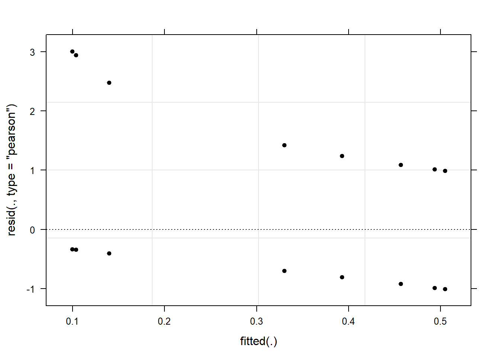
# plot residuals against fitted
stripParams <- list(cex=.3, lines=1.5)
plot(mlr.glmer, form = resid(., type = "response") ~ fitted(.) | ID, abline = 0, par.strip.text = stripParams,cex = .3,id = 0.05, adj = -0.3)
# diagnostic plot: examining residuals (Pinheiro & Bates 2000:175)
plot(mlr.glmer, ID ~ resid(.), abline = 0 , cex = .5)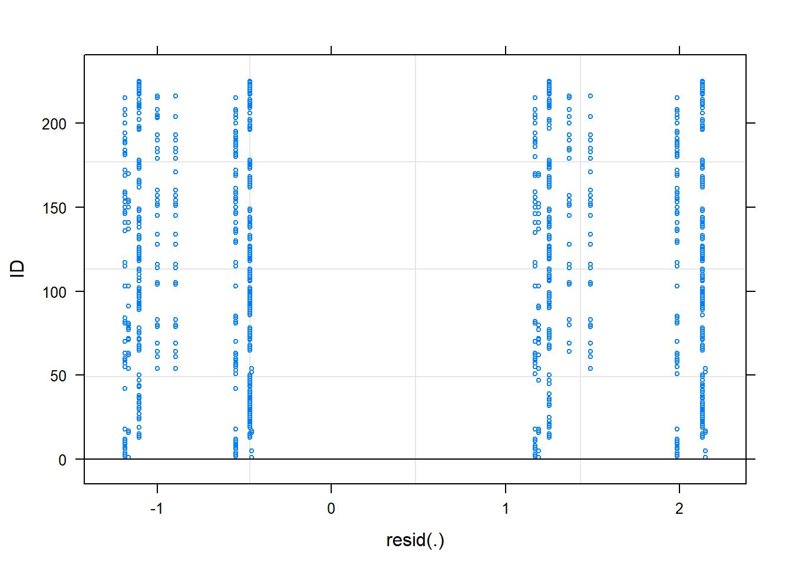
# summarize final model
mblrmtb <- meblrm.summary(m0.glm, m1.glm, m0.glmer, mlr.glmer, dpvar=mblrdata$SUFlike)
mblrmtb <- mblrmtb[, -c(4:5)]
library(knitr) # load library
kable(mblrmtb, caption = "Results of a Mixed-Effects Binomial Logistic Regression Model.")| Group(s) | Variance | Std. Dev. | L.R. X2 | DF | Pr | Significance | |
|---|---|---|---|---|---|---|---|
| Random Effect(s) | ID | 0.02 | 0.13 | 118.61 | 1 | 0 | p < .001*** |
| Fixed Effect(s) | Estimate | VIF | OddsRatio | Std. Error | z value | Pr(>|z|) | Significance |
| (Intercept) | -0.95 | 0.39 | 0.06 | -14.93 | 0 | p < .001*** | |
| PrimingPrime | 1.7 | 1.01 | 5.47 | 0.07 | 22.85 | 0 | p < .001*** |
| GenderWomen | -0.76 | 1.21 | 0.47 | 0.08 | -9.9 | 0 | p < .001*** |
| ConversationTypeSameGender | -0.43 | 1.22 | 0.65 | 0.07 | -6.65 | 0 | p < .001*** |
| Model statistics | Value | ||||||
| Number of Groups | 225 | ||||||
| Number of cases in model | 10170 | ||||||
| Observed misses | 8430 | ||||||
| Observed successes | 1740 | ||||||
| Residual deviance | 8549.57 | ||||||
| R2 (Nagelkerke) | 0.126 | ||||||
| R2 (Hosmer & Lemeshow) | 0.086 | ||||||
| R2 (Cox & Snell) | 0.075 | ||||||
| C | 0.708 | ||||||
| Somers’ Dxy | 0.416 | ||||||
| AIC | 8559.57 | ||||||
| BIC | 8595.7 | ||||||
| Prediction accuracy | 82.69% | ||||||
| Model Likelihood Ratio Test | L.R. X2: 758.28 | DF: 4 | p-value: 0 | sig: p < .001*** |
References
Field, Andy, Jeremy Miles, and Zoe Field. 2012. Discovering Statistics Using R. Sage.